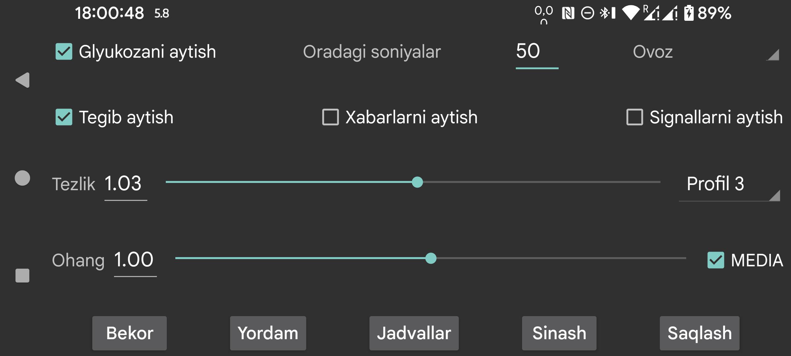

ar be de es fr hi ja nl pl ru tr uk uz zh en
Glyukoza qiymatlari kelganda ularni ovoz chiqarib aytadi.
Oradagi soniyalar: Juggluco keyingi glyukoza qiymatini aytishdan oldin necha soniya kutishini belgilaydi. Yangi qiymat kelganda u darhol aytiladi. Agar katta son berilsa, shu davr tugamasidan kelgan ayrim glyukoza qiymatlari o‘tkazib yuboriladi.
Ovoz: mumkin bo‘lgan ovozlar ro‘yxatidan so‘zlovchini tanlaydi.
Tezlik: son qanchalik katta bo‘lsa, nutq shunchalik tez bo‘ladi.
Tovush balandligi / pitch: son qanchalik katta bo‘lsa, ovoz shunchalik balandroq eshitiladi.
Sinov: oxirgi glyukoza qiymatini aytib beradi.
Ba’zi telefonlarda ishlashi uchun Android’dagi text-to-speech sozlamalarini o‘zgartirish kerak bo‘ladi. Ba’zan til ma’lumotlarini o‘rnatish yoki konfiguratsiyani o‘zgartirish zarur. Samsung telefonlarida turli ovozlarni tanlash uchun Samsung text-to-speech engine o‘rniga Google text-to-speech ni tanlash kerak bo‘ladi. Buni Android sozlamalarida text-to-speech deb qidirib yoki Til va kiritish → Kengaytirilgan → Text-to-Speech bo‘limidan topish mumkin.
Agar Talk touch yoqilgan bo‘lsa, ayrim joylarga tegilganda ovoz chiqariladi:
Ekranda vaqtincha ko‘rinadigan matn xabarlarini va skan natijasini (xato xabarlari va glyukoza qiymatini) o‘qib beradi.
Past va yuqori glyukoza signalida glyukoza darajasini aytadi. Signal boshlangan paytda ham, signal to‘xtatilgan paytda ham o‘qiladi.
Qaysi profil faol ekanini tanlaydi. Standart standart profil. Chap menyu → Sozlamalar → Signallar va Gapirish bo‘limidagi barcha sozlamalar faol profilga bog‘liq.
Juggluco ni kunning ma’lum vaqtida ma’lum profilni faollashtiradigan qilib sozlash mumkin.
Android sozlamalaridagi tovush bo‘limida gapirish ovozini pasaytirish yoki oshirish mumkin. Agar MEDIA o‘chirilgan bo‘lsa, ba’zi telefonlarda Bildirishnoma tovushi, Wear OS soatlarda esa Tizim tovushi ishlatiladi. Bunday holda “Bezovta qilmang” yoqilganda u eshitilmasligi kerak.
Agar MEDIA yoqilgan bo‘lsa, media ovozi ishlatiladi va ko‘p telefonlarda u “Bezovta qilmang” paytida ham eshitiladi.
Signallarni aytish bundan farq qiladi. Agar “Signal — signal” yoqilgan bo‘lsa, signallar Signal toifasi orqali o‘qiladi. Telefonlarda odatda bu signal ovozi bilan, soatlarda esa bildirishnoma ovozi bilan boshqariladi.